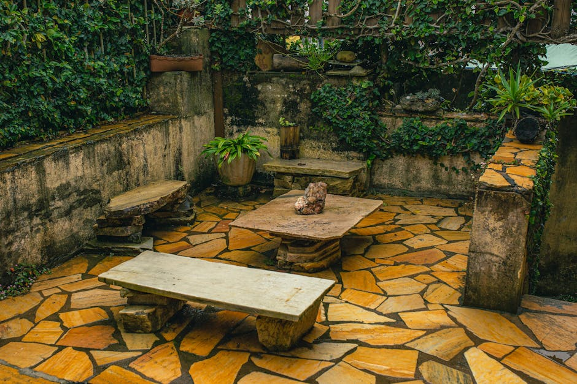

Tänavakivi paigaldus suurtel avalikel pindadel 2026: koolid, lasteaiad, KOV objektid
Avaliku sektori objektid — koolid, lasteaiad, kohaliku omavalitsuse (KOV) väljakud ja mänguväljakute ümbrused — nõuavad tänavakivi paigaldusel oluliselt rangemaid tingimusi kui eraobjektid. Libisemiskindlus, koormusklass, sertifitseeritud materjalid ja hankemenetlusele vastav dokumentatsioon on kohustuslikud, mitte soovituslikud.
Miks avaliku sektori objektid nõuavad erikohtlemist
Kooli õuel liigub tunni vahetusel kuni 400 last korraga. Lasteaia väljakul kukub aastas keskmiselt iga 3. laps vähemalt üks kord. KOV väljakul sõidab läbi hooldusveok, prügiauto ja kiirabi. Need kolm stsenaariumit dikteerivad kõik olulised paigaldusotsused — materjalist alusehituseni.
Erakinnistul saab omanik ise otsustada, kas kasutada 60 mm või 80 mm kivi. Avaliku sektori objektil on see määratud projekteerija poolt, tuginedes koormusklassile ja hangedokumentatsioonile. Selle rikkumine tähendab hanke kaotust ja garantii tühistamist.
Kolm põhilist erinevust eraobjektidest
- Libisemiskindlus (USRV) ≥ 45 — mõõdetakse pendlimeetodiga EN 13036-4 järgi; lasteaia mänguväljakute ümber ≥ 50.
- Koormusklass — kooli sisehoovides N1 (kergsõidukid), KOV väljakutel ja bussipeatustes N2–N3 (raskesõidukid ja hooldustehnika).
- Sertifitseerimine — CE-märgistus, tehase toimivusdeklaratsioon (DoP), soovitatavalt EPD ja Ecolabel-tunnistus.
Materjalivalik: mis sobib koolile, mis lasteaiale
Betoonkivi Brikers, Aroc ja Premia toodangust katab enamiku avalike objektide vajaduse. Graniit kasutatakse esinduslikel hankeplokkidel — vallamaja ees, kultuurikeskuse promenaadil, ajaloolises miljöös. Klinkerkivi sobib kõnniteedele ja terrassivarju alustele, kus soovitakse aastakümnete pikkust ilma-taluvust.
Materjalide võrdlustabel avaliku sektori objektidele
| Materjal | Sobiv objekt | Paksus | Hind €/m² (2026) | Eluiga | Standard |
|---|---|---|---|---|---|
| Betoonkivi (Brikers/Aroc) | Kool, lasteaed, KOV kõnnitee | 60–80 mm | 42–58 | 25–30 a | EVS-EN 1338 |
| Betoonkivi (Premia esindus) | Vallamaja, KOV väljak | 80 mm | 55–68 | 30 a | EVS-EN 1338 |
| Graniit (Soome/Skandinaavia) | Esindusplats, mälestusmärk | 60–100 mm | 110–140 | 80+ a | EVS-EN 1342 |
| Graniit (Hiina/India) | Kõnnitee, sissepääs | 60 mm | 85–105 | 50+ a | EVS-EN 1342 |
| Klinker | Muinsuskaitse, ajalooline miljöö | 52–71 mm | 75–95 | 60+ a | EVS-EN 1344 |
Lasteaia mänguväljakute erilisus
Lasteaia mänguala ümbrus ei ole klassikaline tänavakivi paigaldus. Sinna sobib libisemiskindel betoonkivi USRV ≥ 50, faasitud servadega (max 2 mm), ilma teravate nurkadeta ja tumeda pinnaga (musta või grafiithalli pinnaga kivi soojeneb suvel oluliselt rohkem — hoia heledaid toone). Vaata täpsemat käsitlust libisemiskindla looduskivi paigalduse juhendist.
Balcon Grupp OÜ koostab hanke tehnilisele kirjeldusele vastava pakkumise 3 tööpäeva jooksul, koos sertifikaatide ja tootjadokumentatsiooniga.
Koormusklassid ja aluspõhi: mida projekteerija nõuab
Avaliku sektori objektil määrab aluspõhja paksuse ja materjali koormusklass, mitte kivipaksus. EVS 901-3 järgi:
Koormusklassid ja aluspõhja nõuded (EVS 901-3)
| Koormusklass | Kasutusala | Killustik alus (mm) | Liivalus (mm) | Kivipaksus (mm) |
|---|---|---|---|---|
| N0 | Kõnnitee, jalgtee | 150–200 | 30–40 | 60 |
| N1 | Kooli õu, lasteaia sisehoov | 200–250 | 30–40 | 60–80 |
| N2 | KOV väljak, bussipeatus | 300–350 | 40 | 80 |
| N3 | Sõidutee, hooldusveokid | 400–500 | 40 | 80–100 |
Kooli õuel, kus liigub kord kuus hooldusveok, kasutatakse tavaliselt kompromissklassi N1–N2 kombinatsiooni: peapinnal N1, veokite läbisõidualal N2. See tuleb projekti selgelt märkida ja pinnasel visuaalselt eristada (näiteks värvi- või mustrivahetusega).
Aluspõhi külmakerkeohtlikus pinnases
Eesti pinnas on paljudel objektidel savikas — see tähendab külmakerkeohtu. Koolide ja lasteaedade puhul lisandub aluspõhjale sageli:
- Geotekstiil (klass 3–4) killustiku ja pinnase vahele
- Killustikutasandiline drenaažsüsteem (Ø 100–160 mm PE-toru)
- Sadeveerennid iga 20–30 m tagant
- Külmakerkeisolatsioon XPS 50–100 mm (ainult risktsoonides)
Hankemenetlus ja dokumentatsioon
KOV objektid ostetakse üldjuhul riigihangete registri (RHR) kaudu. Pakkumise koostamiseks on vaja järgmisi dokumente:
Hankepakkumise kohustuslikud lisad
- Tehniline pakkumine — kirjeldab paigaldustehnoloogiat, ajakava, meeskonda ja kvaliteedikontrolli.
- Toote toimivusdeklaratsioon (DoP) — tootja väljastatud, iga kasutatava kivi kohta.
- CE-märgistus — kivi külge trükitud või tootja tunnistusel.
- EVS-EN 1338/1342/1340 vastavustunnistus — sõltuvalt kasutatavast materjalist.
- Paigaldaja referentsobjektid — 3–5 sarnast avaliku sektori objekti viimasest 3 aastast.
- Kindlustuspoliis — ehitajate vastutuskindlustus min. 300 000 €.
- Garantiitingimused — 2-aastane paigaldusgarantii on avalikel objektidel standard.
Balcon Grupp OÜ (reg 16294742) omab kõiki nõutavaid dokumente ja on osalenud riigihangetel alates 2022. aastast. Hankelehe koostame 3 tööpäeva jooksul objekti tehnilise kirjelduse saamisest.
Väiksemate KOV objektide lihtsustatud menetlus
Kuni 60 000 € maksumusega objektidel (näiteks lasteaia sissepääsu renoveerimine 40 m²) piisab tihti 3 hinnapakkumisest. Sel juhul on protsess kiirem — pakkumise saab tavaliselt 5 tööpäevaga ja leping sõlmitakse 2 nädalaga. Vaata näiteks meie KOV kortermaja hooviala renoveerimise juhendit ja omavalitsuse kõnnitee sillutuse käsitlust.
Ohutus, turvalisus ja mänguväljakute erinõuded
Kooli või lasteaia objektil ei piisa üksnes libisemiskindlusest. Standard EVS-EN 1176 (mänguväljakud) nõuab pehmenduspinda löögitsoonis (fall zone). See tähendab, et kui mänguväljak paikneb tänavakivipaigalduse kõrval, peab kivipind lõppema vähemalt 1,5 m kaugusel liikumisvahenditest ja ronila põhjast.
Ohutusnõuete kontrollnimekiri projekteerimisel
- Servade faasimine max 2 mm (lasteaias 1 mm)
- Kõrguslikud vahed max 4 mm (koolides), 3 mm (lasteaedades)
- Vuugilaius 3–5 mm (mitte üle 5 mm — jalatsi kanna kinnijäämise oht)
- Kaldenurgad 0,5–2 % (vee äravool, mitte kukkumisoht)
- Kontrastsed servaääred nägemispuudega inimestele (musta-valge kombinatsioon või taktiilne kivi)
Hoolduskava ja garantii KOV objektidele
Avaliku sektori objektil on hoolduskava paigaldusgarantii lahutamatu osa. Selle puudumine annab tellijale õiguse garantiid pikendada või lugeda paigaldust puudulikuks. Standardne hoolduskava sisaldab järgmisi tegevusi:
Aastane hoolduskava (KOV kool või lasteaed)
| Ajakava | Tegevus | Tellija/Paigaldaja |
|---|---|---|
| Kevadel (märts–aprill) | Vuugiliiva täitmine, üksikute kivide seadmine | Paigaldaja (garantii sees) |
| Suvel (juuni) | Pinnase pesu, umbrohu eemaldus vuukidest | Tellija |
| Sügisel (oktoober) | Sadeveesüsteemide kontroll, drenaaži puhastus | Tellija + paigaldaja audit |
| Talvel (jaanuar–veebruar) | Ainult mehhaaniline lumekoristus, mitte soolatamine | Tellija |
| Igal 5. aastal | Kogu vuugimaterjali uuendus, tugev pesu | Paigaldaja (eraldi hankena) |
Balcon Grupp OÜ pakub kõikidele KOV objektidele 2-aastast paigaldusgarantiid, mille sees on kaks kevadhooldust ja üks sügisaudit. Suurematel objektidel (üle 800 m²) saab garantii lisatingimustega laiendada. Seotud teemad: tänavakivi lahtivõtmine ja ümberpaigaldus, garantii tingimused ja aastad.
Sooltamise keeld ja alternatiivid
Betoonkivi lagundab kloriidiga sool (NaCl, CaCl₂) — 3–5 hooaja pärast tekivad pinnale kraatrid ja mikropraod, mille sees vesi külmub. KOV objektidel kasutatakse selle asemel:
- Jämedat liiva või graniitkruusa (0/4 mm)
- Puidutuhka (looduslik libisemistõke, lasteaedades keelatud)
- Mehhaanilist harjade ja hõõruvate ketasmasinatega puhastust
- Elektrilist maapinna soojendust (soovitatav vaid sissepääsualadel — vt soojendusega kivisillutise juhend)
Tüüpilised avaliku sektori projektid: näited ja hinnavahemikud
Näited 2025–2026 hooajast
| Objekt | Pindala | Materjal | Kogumaksumus | Kestus |
|---|---|---|---|---|
| Lasteaia sissepääs + jalgtee | 85 m² | Betoonkivi 80 mm, USRV 50 | ~7 200 € | 5 tööpäeva |
| Kooli sisehoov | 420 m² | Betoonkivi 80 mm N1-N2 kombo | ~28 500 € | 3 nädalat |
| Vallamaja esine plats | 320 m² | Soome graniit 80 mm | ~45 000 € | 4 nädalat |
| KOV kõnnitee (1 km) | 1 800 m² | Betoonkivi 60 mm, äärekivi lisaks | ~92 000 € | 6 nädalat |
| Kultuurikeskuse esine | 560 m² | Graniit + betoonkivi kombo | ~68 000 € | 5 nädalat |
Kõik hinnad sisaldavad materjali, paigaldust, aluspõhja ehitust, äärekivid ja hankedokumentatsiooni. Ei sisalda pinnaseväljavõttu (kui vajalik), sadeveesüsteemide ehitust ega asfaltimist.
Äärekivi avalikel objektidel
Avalikel objektidel on äärekivi peaaegu alati kohustuslik — see määrab liikluspiirid ja hoiab kivi konstruktsioonis. Kasutatakse standardit EVS-EN 1340 vastavaid graniit- või betoon-äärekive. Vaata täpsemat äärekivi ülevaadet ja hinnavahemikke Tallinnas (Tallinna äärekivi hind) ning Tartus (Tartu äärekivi hind).
Balcon Grupp OÜ tegutseb üle Eesti, esitab hankepakkumise 3 tööpäevaga ja tagab kogu dokumentatsiooni vastavuse EVS-EN standarditele.
Levinud vead avaliku sektori objektidel
Riigikontrolli 2024. aasta auditist ja avalikest hangete vaidlustustest tuli välja 5 kõige sagedasemat viga:
- Vale koormusklass — paigaldajad kasutavad 60 mm kivi seal, kus projekt nõuab 80 mm. See selgub tavaliselt 2–3 hooaja pärast (tekivad vajumid).
- Puuduvad sertifikaadid — kivi tuuakse ilma DoP-dokumendita, mis muudab objekti garantiiga vaidlemise võimatuks.
- Ebapiisav libisemiskindlus — kasutatakse esteetilise pinnaga kivi (USRV 30–35), mis lasteaia mänguväljaku ümbruses on ohtlik.
- Vuugimaterjali vale valik — tavaline liiv upub esimese sügisvihmaga, tuleb kasutada polümeer-vuugiliiva või stabiliseeritud kildmaterjali.
- Puuduvad drenaažsüsteemid — sadevesi ei jõua äravoolu, kivipind muutub 2–3 aasta pärast lainetavaks.
Kõik need vead on välditavad, kui hanke tehniline kirjeldus on hoolikalt koostatud ja paigaldaja valimisel kontrollitakse referentse. Vaata tänavakivi paigalduse üldjuhendit ning hinnakalkulatsiooni 2026. aasta kalkulaatorist.
Kokkuvõte
Avaliku sektori tänavakivi paigaldus on eraobjektist keerulisem, kuid süsteemsem: standardid (EVS-EN 1338/1342/1340, EVS 901-3), koormusklassid (N0–N3), libisemiskindluse nõuded (USRV ≥ 45–50) ja hankedokumentatsioon annavad selge raamistiku, mille sees kvaliteedi tagamine on lihtsam kui erakinnistul. 2026. aastal tuleb arvestada 42–68 €/m² betoonkivi ja 85–140 €/m² graniidi puhul. Iga tõsine KOV, kooli või lasteaia objekt vajab 2-aastast paigaldusgarantiid ja aastast hoolduskava.
Korduma kippuvad küsimused
Kui palju maksab tänavakivi paigaldus kooli õuel 2026. aastal?
Kooli õue tänavakivi paigaldus maksab 2026. aastal 55–75 €/m² betoonkivi (Brikers, Aroc, Premia) puhul ja 95–140 €/m² graniidi puhul. Hind sisaldab 80 mm kivi, N1–N2 koormusklassi aluspõhja (250–350 mm killustik + 40 mm liiv), äärekivi ja hankedokumentatsiooni. 400 m² sisehoovi tüüpiline maksumus on 25 000–32 000 €.
Milline libisemiskindlus on lasteaia mänguväljaku ümbruses kohustuslik?
Lasteaia mänguväljaku ümbruses on kohustuslik libisemiskindlus USRV ≥ 50, mõõdetud pendlimeetodiga EN 13036-4 järgi märja pinna korral. Tavalistel kooli sisehoovidel piisab USRV ≥ 45. Ronila või liumäe otsene alune ei tohi olla tänavakivi — kohustuslik on kummipehmenduspind vähemalt 1,5 m raadiuses.
Milliseid dokumente vajab KOV riigihanke pakkumine?
KOV hangepakkumine vajab: tehnilist pakkumist (tehnoloogia, ajakava, meeskond), tootja toimivusdeklaratsiooni (DoP), CE-märgistust, EVS-EN 1338/1342 vastavustunnistust, 3–5 referentsobjekti viimasest 3 aastast, ehitajate vastutuskindlustust min. 300 000 € ja 2-aastast paigaldusgarantiid. Balcon Grupp OÜ (reg 16294742) koostab kogu paketi 3 tööpäevaga.
Miks ei tohi KOV objektil kasutada soola libeduse tõrjeks?
Kloriidsool (NaCl, CaCl₂) lagundab betoonkivi 3–5 hooajaga — pinnale tekivad kraatrid ja mikropraod, kuhu vesi külmub ning kivi puruneb sisemuselt. Selle asemel kasutatakse jämedat liiva (0/4 mm), graniitkruusa või mehhaanilist harjastust. Elektriline maapinna soojendus on lubatud vaid sissepääsualadel.
Kui pikk on avaliku sektori objektide standardgarantii?
Avaliku sektori objektide standardne paigaldusgarantii on 2 aastat, mille sees paigaldaja teostab tasuta kaks kevadhooldust (vuugiliiva täitmine, üksikute kivide seadmine) ja ühe sügisauditi. Suurematel objektidel (üle 800 m²) saab garantii lisatingimustega laiendada. Balcon Grupp OÜ kohustub garantiitöid alustama 5 tööpäeva jooksul teate saamisest.